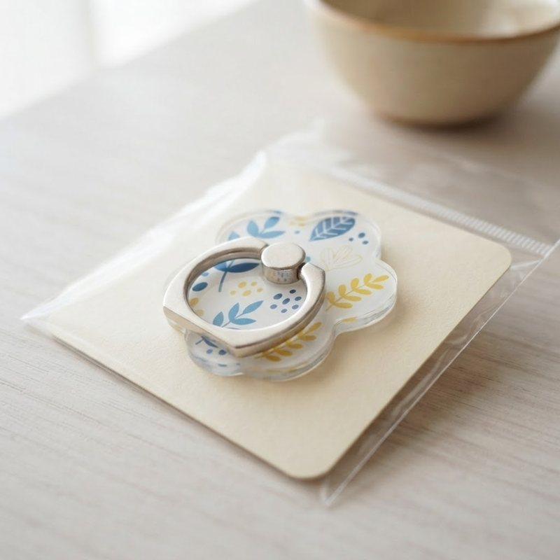
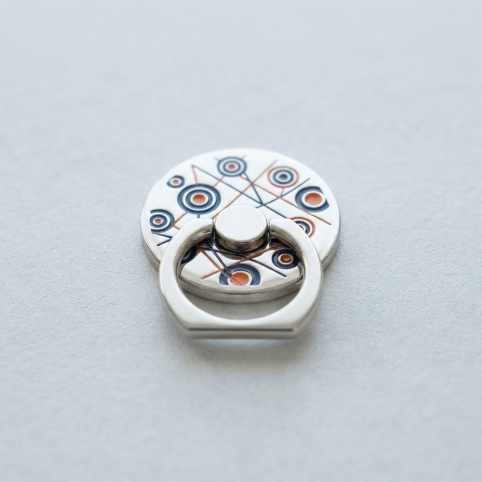
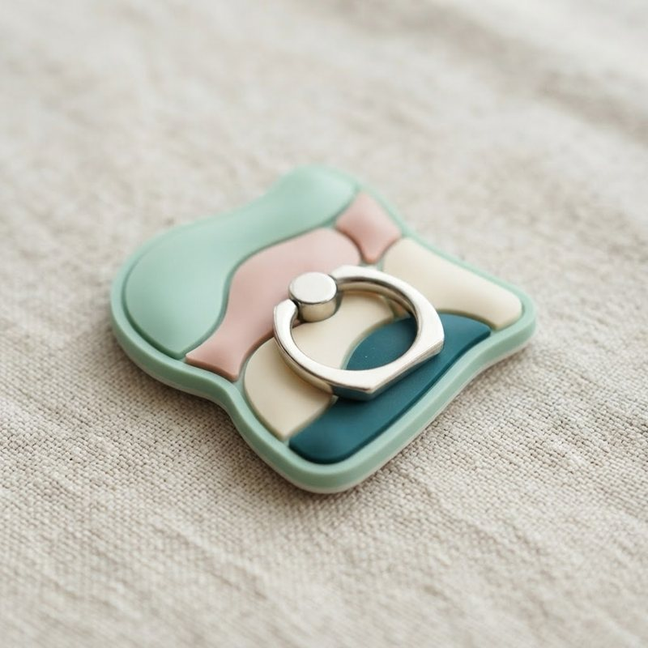
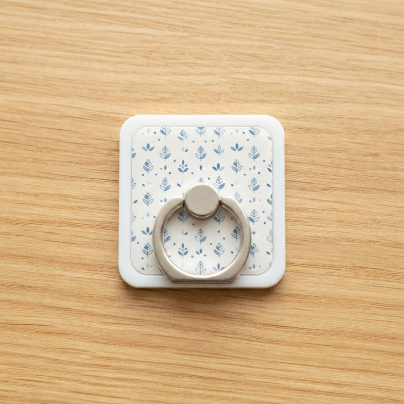
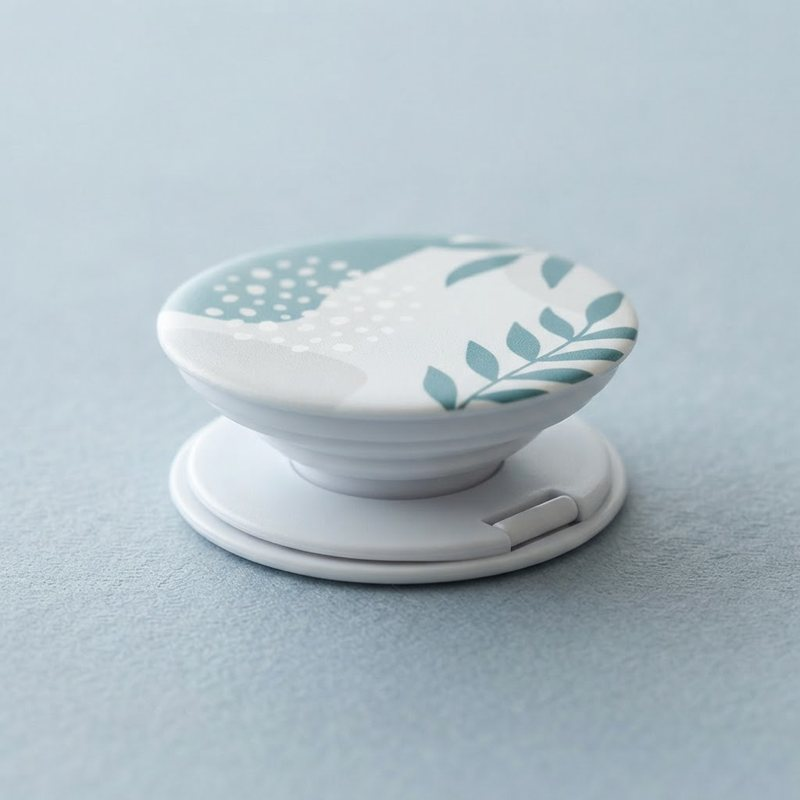

オリジナルスマホリングは、ロゴやイラストを入れて、好きな形に作れるスマホ用のアクセサリー型ノベルティです。当サイトでは、アクリル、メタル、ラバーなど、素材と形の違うスマホリング・スマホグリップを、数量別の単価つきで比べられます。
オリジナルスマホリングとは？
オリジナルスマホリングとは、スマートフォンの背面に付けて、指を通して持ちやすくする小物に、ロゴ・絵柄を入れて、オリジナルに仕上げる販促品のことです。ダイカット（形に合わせて抜く加工）に対応する商品なら、ロゴの形のままスマホリングにできます。
オリジナルスマホリングの選び方
- 素材：アクリル、メタル、ラバーなどがあります。見た目の印象と、質感が変わります。
- 形：ダイカット対応の商品は、自由な形に作れます。
- 台紙：オリジナル台紙付きの商品なら、配布しやすく、ブランドの印象も伝えられます。
- サイズ：各商品の仕様表のサイズを確認してください。
オリジナル製作の進め方
- 商品を選ぶ
- 見積もりを依頼する
- デザインデータを入稿する
- 校正で仕上がりを確認する
- 量産・お届け
詳しい流れは、ご利用の流れをご覧ください。
オリジナルスマホリングの価格・仕様の比較表
| 商品 | 最低注文数 | 最安単価 | 校正代 | 素材 |
|---|---|---|---|---|
| オリジナルスマホグリップ 丸型（φ約44mm・スタンド兼用） | 100個 | 320円 | 10,000円 | PC ABS PP |
| オリジナルスマホリング 角型（40×35mm） | 100個 | 460円 | 8,000円 | ― |
| オリジナルスマホリング ラバー製ダイカット（40×50mm） | 100個 | 520円 | 14,000円 | ラバー(ポリ塩化ビニル) リング部分 |
| オリジナルアクリルスマホリング ダイカット（H5×W4cm以内） | 100個 | 545円 | 7,000円 | アクリル（透明2mm＋白アクリル2mm貼り合わせ） リング部 |
| オリジナルメタルスマホリング（亜鉛合金・色挿し） | 100個 | 705円 | 16,000円 | 亜鉛合金 |
単価は、数量が最も多い段階の金額です。素材の記載がない商品は「―」と表示しています。
オリジナルスマホリングの商品（5点）

人気 2位スマホ・ガジェット
オリジナルアクリルスマホリング ダイカット（H5×W4cm以内）
545円〜 ／ 100個から

高級スマホ・ガジェット
オリジナルメタルスマホリング（亜鉛合金・色挿し）
705円〜 ／ 100個から

スマホ・ガジェット
オリジナルスマホリング ラバー製ダイカット（40×50mm）
520円〜 ／ 100個から

スマホ・ガジェット
オリジナルスマホリング 角型（40×35mm）
460円〜 ／ 100個から

スマホ・ガジェット
オリジナルスマホグリップ 丸型（φ約44mm・スタンド兼用）
320円〜 ／ 100個から
オリジナルスマホリングのよくある質問
スタンドとしても使えますか？
スタンドとして使えるスマホグリップを掲載しています。対応の有無は、各商品ページでご確認ください。
オリジナルスマホリングは何個から注文できますか？
最低注文数は商品によって異なります。各商品ページの「数量別の価格」に、最低注文数と、数量ごとの単価を載せています。数量が増えるほど、1個あたりの単価は下がります。
仕上がりを事前に確認できますか？
量産の前に、仕上がりを確認する「校正」の工程があります。校正代は、各商品ページに記載しています。
デザインデータがなくても名入れできますか？
ロゴや絵柄のデータがあるとスムーズですが、データがない場合も、見積もりの際にご相談ください。データの形式は、商品によって異なる場合があります。